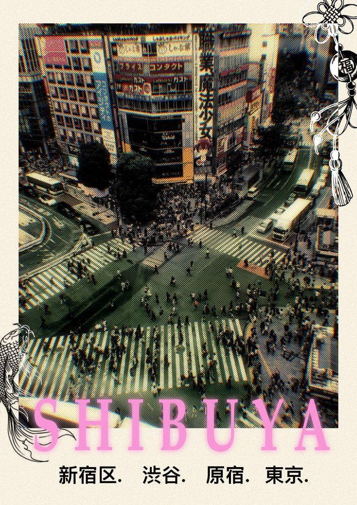

¿Y si te digo que hay un lugar donde el caos se siente como calma y la moda es puro contraste? Nunca he sido una asistente de vuelo pero hoy te llevare a conocer un maravilloso lugar, no necesitas salir de casa, solo relajate y ten tu mente muy abierta para la siguiente lectura.
11 de septiembre 2025
¿Cuántas veces has estado scrolleando en tus redes sociales y te han salido videos de ciudades salidas de una película de ciencia ficción? ¿Alguna vez te has dicho “yo quisiera estar ahí”?
Bueno, te presento a la próxima ciudad que te hará pasar unas noches interminables viendo videos e imaginando como seria la vida allí. Shibuya, es la ciudad perfecta para aquellos que tienen una pequeña adicción a scrollear en Tik Tok (estoy escribiendo esto pensando en mi amiga Majo), pero todos hemos conocido a alguna Majo o tal vez tu seas ella, la buena noticia es que si viajas 14,340 kilómetros te aseguro que encontraras el lugar perfecto para que estimules a tu mente en muy poco tiempo, al fin y al cabo ya estas acostumbrado al brainrot.
En Shibuya encontrarás pantallas gigantes con anuncios que cambian más rápido que tus estados de ánimo, letreros tan insistentes como ese man que no capta las señales y ni hablemos de la multitud que avanza como si el tiempo se les acabara. Y por supuesto lo más importante, “la moda” (¿Por que otra razón estarían leyendo esto? ¿Por mi excelente escritura? Gracias, lo se)
Bueno, retomando a la moda en Shibuya, es todo un caso de estudio debido al gran contraste entre un estilo y otro, es como los Geminis; por una lado podemos ver a los más estilosos, visten con colores vibrantes, zapatos que parecen salidos de un anime y podríamos decir que outfits bastante cuestionables, pero, si no nos deja ciegos esa cantidad de luces LED podemos ver al otro 99% de la sociedad japonesa (que son tan aburridos como tu ex), bueno no tan así pero si, van con abrigos largos NEGROS, trajes NEGROS y zapatos, adivina de qué color, si NEGROS, son como los subtitulos en una pantalla llena de efectos especiales.
Pero si dejamos de ser tan criticones (como tu tía en Diciembre), podemos entender un poco el porqué se visten de esta manera, no es necesariamente una falta de estilo, al contrario la mayoria piensa que el negro es elegancia y practicidad, aunque para mi tiene que ver mas con el hecho de querer pasar desapercibidos, seamos sinceros, Japón no tiene la mejor reputación en cuanto a salud mental, (y bueno, si yo trabajara más de 12 horas al día también quisiera que nadie me mirara).
Entonces, podemos decir que ese juego entre los colores tan brillantes de la ciudad y lo oscuro que está presente en la mayoría de habitantes (casi como un reflejo de su estado de ánimo), pues no es casualidad, en una sociedad que está influenciada por la disciplina, la frialdad y el silencio, pero ahí es cuando entran esos lugares como Shibuya, lugares que aunque son muy caóticos, te permiten escapar de la monotonía, que aunque suene muy irónico, con la saturación de color te hace sentir en calma, son espacios de desahogo.
Y AQUÍ ENTRA LA MODA OTRA VEZ (lo siento por la mayúscula, queria ver si seguías conmigo, se que es difícil concentrarte por tanto tiempo), bueno si pensamos en la moda, ponerse un bolso rosado fosforescente o unas medias con dibujitos, no te salva del estrés, pero funciona como una especie de rebeldía adolescente contra tanta seriedad. Es como decirte a ti mismo: “okay, tengo que trabajar por doce horas, pero al menos mis calcetines gritan diversión”.
Y si lo piensas, no está tan lejos de lo que pasa contigo frente al closet. Ese momento que nos pasa a todos: ¿Me voy de negro porque asi se siente mi alma, o me ponga esta camisa amarilla con gatitos que me va a recordar no matar a nadie en el transporte publico? (¿O acaso solo me pasa a mi?). La ropa no va a resolver todos tus problemas, pero sí puede darte ese empujoncito. Es casi como una pequeña dosis de café, chiquita, pero útil para sobrevivir el día.
Ahora agradecele a TikTok y obviamente a mi, conociste a Shibuya y puedes irte sabiendo que podemos habitar los dos lados. El brillo y la sombra, el orden y el caos, el negro y el color. No tienes que elegir uno sólo, puedes ser formal y aburrido en la mañana y un festival de colores en la tarde. Lo importante es que tu ropa funcione como un recordatorio de que eres más que tus rutinas o tu vida diaria, que tienes permiso para jugar, para brillar o para esconderte cuando lo necesites.
Felicidades, llegaste al final, tal vez tu cerebro no esté tan mal debido a esos videos rápidos, así que ahora puedo preguntarte: ¿Qué necesitas ponerte hoy para sentirte un poquito más tú?